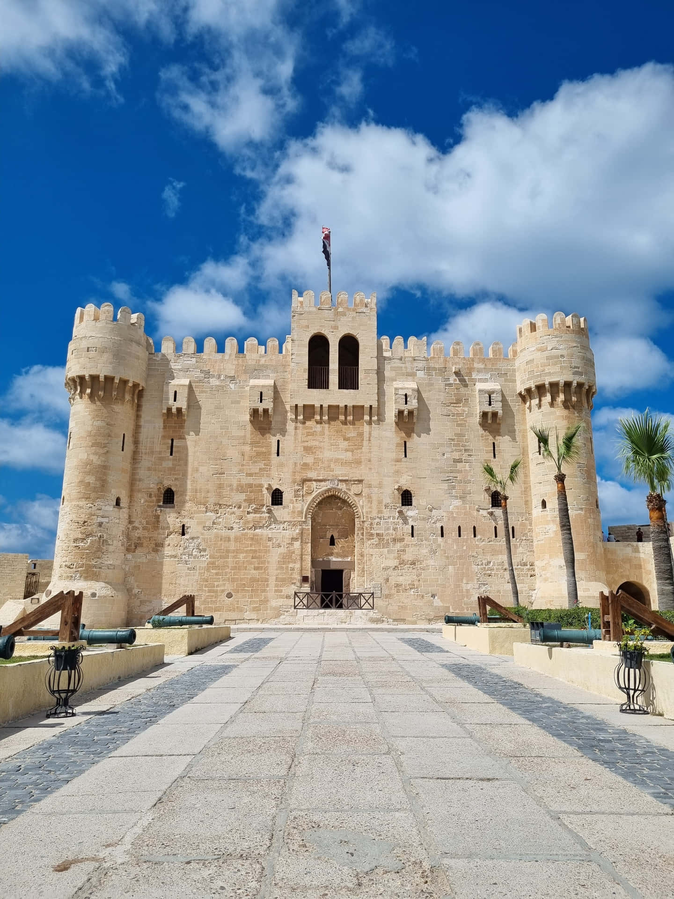

Alexandria is a coastal city in northern Egypt located along the Mediterranean Sea. It is known for its beautiful seafront, moderate climate, and deep historical roots. Alexandria Governorate was founded by Alexander the Great and became one of the most important cultural centers of the ancient world. It is famous for landmarks such as the Bibliotheca Alexandrina, Qaitbay Citadel, and Stanley Bridge. Beyond its historical importance, Alexandria is a major center for trade, tourism, and education, combining Mediterranean charm with modern urban life.